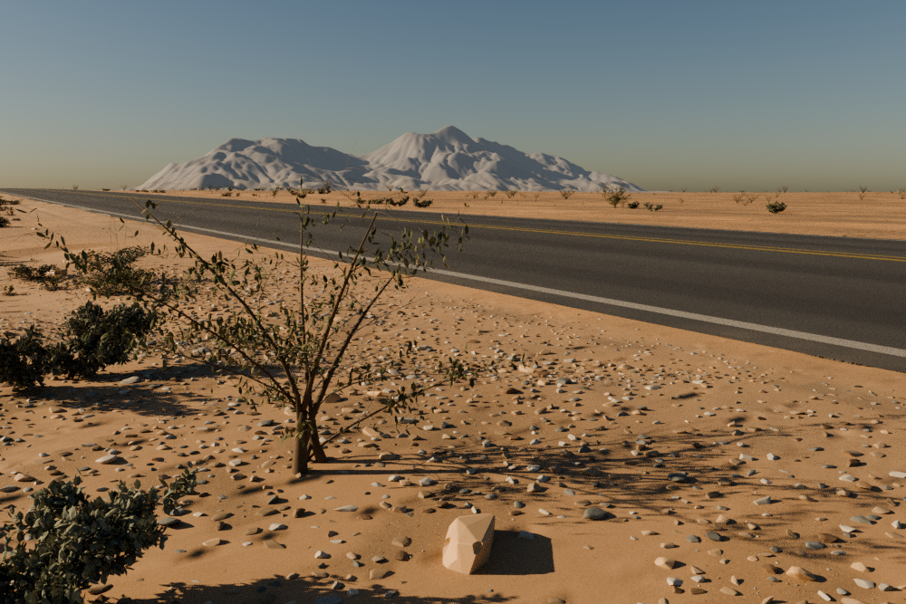

Victorville Road
A procedural high-desert road study: weathered asphalt, warm mineral soil, finite gravel, connected shrubs and the original mountain forms.

1000 × 667 · 32 samples per pixel · RGB16 · AgX Medium High Contrast · no denoising or image generation

What is here
Actual rendering of original 3D geometry and procedural materials. The CQ snapshot retains the original mountains, warm soil palette and connected shrub crowns, with corrected gravel support.
The 22° Nishita daylight is a candidate lighting setup. It is not a measured site condition or a local clock time.
Current limits
This is an unfinished regional-inspired scene. The preview uses 1024px context textures, view-dependent allocation and culling, and a stride-2 asphalt mesh.
Far-ridge airlight uses a surface approximation. The image is not a surveyed reconstruction, accepted final-quality render or native CYBR LIGHT output.